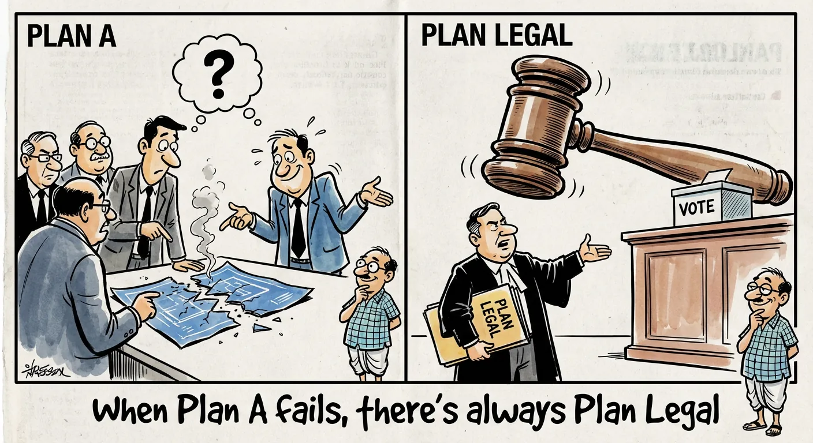
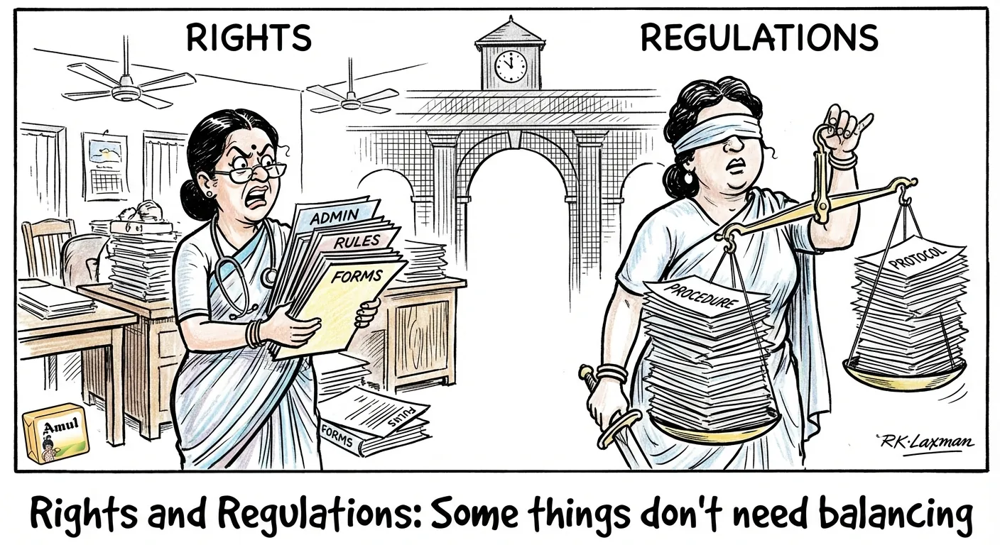

2026-02-08

Testing which way the Marathi wind blows...
BJP picked Ritu Tawde as Mumbai Mayor due to Marathi backing for Sena (UBT) and MNS: Raut
BJP names Marathi candidate Ritu Tawde as Mumbai Mayor, with opposition claiming this choice was forced due to strong Marathi voter support for other parties.
2026-02-06

When budget cuts mean one artist must do it all!
Odisha food and crafts mela from February 6 to 8
Odisha's cultural festival showcasing traditional food, crafts and performances is being held in Hyderabad over three days, featuring artisans, dancers and musicians.
2026-02-06

When Plan A fails, there's always Plan Legal
Supreme Court refuses to entertain Jan Suraaj Party’s plea challenging 2025 Bihar Assembly elections
After losing Bihar elections, Jan Suraaj Party challenges results in Supreme Court over government's pre-election cash transfers to women voters. Court dismisses case, questions party's motives.
2026-02-06
Safety First... Safety Second... Maybe Third Time's the Charm?
Oxygen tank flow meter cap bursts, injures female attendant at medical college hospital in Kerala
At a Kerala hospital, an oxygen tank flow meter cap burst and injured an attendant. This was the second such incident in less than a year.
2026-02-05

When free trade agreements aren't so free after all...
Concerned that FTA may cut access to medicines in India, rest of the developing world: Médecins Sans Frontières writes to EU
Medical aid group MSF warns that EU-India trade deal could restrict access to affordable generic medicines in developing nations, potentially affecting millions dependent on Indian-made drugs.
2026-02-05
Deadline magic: When bureaucrats think calendars can solve decades-old problems
Maoist killed in encounter with security personnel in Chhattisgarh's Bijapur
Government sets March deadline to end Maoist insurgency in Chhattisgarh, with increased encounters and fatalities reported in forest regions.
2026-02-05
Build it and they will learn... eventually
CM Nitish Kumar announces opening of colleges in all 534 blocks of Bihar
Bihar CM announces plans to open colleges in all 534 blocks by 2026, starting with 213 new colleges in phase one to improve higher education access.
2026-02-04

Justice may be blind, but the numbers don't lie
HC issues notices to Bar Council of India and A.P. on plea for 33% quota for women advocates
Andhra Pradesh High Court considers petition for 33% quota for women lawyers in Bar Association elections. Court issues notices to Bar Council seeking response.
2026-02-04
The Electric Bus Rally: Service or Serve?
Electric buses in 23 routes in the city: Mayor
Thiruvananthapuram city plans to launch electric buses on 23 routes, though there are disagreements about suburban coverage. The mayor and transport minister had earlier disputes about service areas.
2026-02-04

Rights and Regulations: Some things don't need balancing
Maternity leave is a right, can’t be clubbed with regular leave: Kerala HC
Kerala High Court rules that maternity leave is a fundamental right that cannot be combined with regular leave. Case involves doctor seeking approval for medical and maternity leave exceeding usual limits.